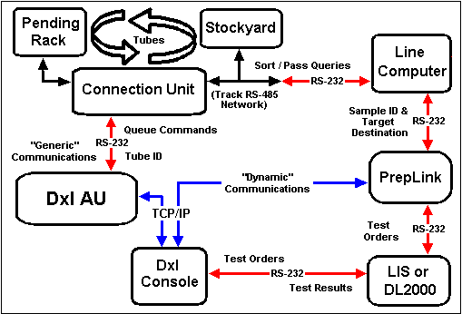

Dynamic LAS Operating Principles
Purpose
This document provides information on the operating principles of the dynamic LAS.
Dynamic LAS Communications Diagram

Description
The Dynamic LAS interface uses an extra TCP/IP network connection to communicate DxI readiness, sample arrival, and test completion status to the LAS PrepLink computer. This communication allows the PrepLink to make enhanced tube routing decisions and reduce operator interventions.
The Dynamic TCP/IP communications are used with the existing generic RS-232 communications between the DxI AU and the connection unit. With only the generic LAS communications, tubes always sort to the DxI and the PrepLink is forced to assume that all tests are complete when the tube sorts to the DxI.
TCP/IP Messages
| TCP/IP Message | Information Communicated to PrepLink |
|---|---|
| Instrument Status Notification
Sent from DxI whenever:
|
DxI sends a status of OK or Not OK to PrepLink:
PrepLink does not send tubes to a DxI while DxI Status = Not OK.
Note: Anytime DxI transitions to Not OK, a
System is not ready to aspirate samples from the track event is posted in DxI event log. Details of this event show a list of subsystems that must all have a state = 1 for OK status.
Example of event details:
A state = 0 in the list identifies underlying cause of a Not OK status. In this case, a Diagnostics function was accessed. Note: When all states become = 1, the DxI transitions to OK and a
System is ready to aspirate samples from the track message is posted in the event log. The OK status tells PrepLink to resume sending tubes to the DxI.
|
| Test Availability Update
Sent from DxI whenever:
|
Note: The DxI aliquots the sample for Not Runnable tests and hold it in the sample storage wheel for up to three hours with a Supply Wait condition.
|
| Sample Arrival Notification
Sent from DxI when LAS tubes are processed through the aspiration position |
This message notifies PrepLink that the tube was processed through the aspiration position and one of three things has happened with the sample:
|
| Test Done Notification
Sent from DxI when it posts a result or cancels a test before completion. |
If the DxI sends a No Error in the Sample Arrival Notification, then the PrepLink expects a Test Done Notification for each of the tests scheduled for that sample. Test Done Notification can have these outcomes:
|
Tube Disposition Decisions
| TCP/IP Message | DxI Message Contents and LAS Behavior Descriptions |
|---|---|
| Sample Arrival Notification
Sent from DxI when LAS tubes are processed through the aspiration position |
|
| Test Done Notification
Sent from DxI when it posts a result or cancels a test before completion. |
For all samples processed with a
No Error status, the PrepLink sends the tube into the stockyard with a
Waiting for result status for each of the tests for the sample. The DxI sends one of these four outcomes for each test, and the PrepLink changes the test status:
|
Stockyard Timeouts
- Urgent: Used for tests with shorter completion times. Default setting = 30 minutes.
- Normal: Used for tests with longer completion times. Default setting = 80 minutes.
PrepLink allows a tube to wait in the stockyard with a Waiting for Result or a Pending status, until a stockyard timeout occurs for one of the tests. If a timeout occurs, then the tube is moved from the stockyard to the pending rack for manual disposition by the operator.
DxI Behavior Changes with Dynamic LAS
DxI behavior changes were incorporated into Dynamic mode to allow tubes to escape the spur when the DxI goes to Paused or Not Ready. The Not OK status tells the PrepLink not to sort any new tubes into the spur, but the tubes in the spur can get out with these changes:
Query BCR Changes for Dynamic Mode:
- DxI Diagnostics screens are active.
- LAS mode is not online (alarm occurs at connector keypad).
- The Add Tube Command contains an invalid sample ID, tube type, or prior use code (alarm occurs at connector keypad).
Aspiration BCR Changes for Dynamic Mode: